Frequently Asked Questions About Using RSIGuard
Registration, Purchase & Installation
The registration, purchase & installation FAQ questions apply to single-copy licenses only. If your organization has purchased RSIGuard for you and other employees, this section does not apply to you.
AutoClick / KeyControl
BreakTimer
DataLogger
ErgoCoach
ForgetMeNots
Miscellaneous about RSIGuard
Miscellaneous about RSI
Registration, Purchase & Installation
How does RSIGuard purchase and registration work?
When you download and install the 45-day trial of RSIGuard from our website (or install it from a CD), you are getting a fully functional copy of RSIGuard. However, you are only allowed to use it for 45 days. At the end of 45 days, RSIGuard will ask you to either purchase a copy, or uninstall it from your computer. If you decide to purchase RSIGuard, you will receive a registration code. You enter this registration code into your trial copy. You can do this either when RSIGuard asks you to register or by clicking on the Setup menu and selecting the Purchase or Register RSIGuard option. This converts your trial copy into a purchased, permanent copy. There is no need to install anything additional.
Back to top
What do I get when I purchase RSIGuard?
You get a registration code. The registration code, when entered into RSIGuard, converts your RSIGuard trial copy into a permanent one. There is no need to uninstall the RSIGuard trial because the trial copy becomes the purchased version.
Back to top
How does my RSIGuard license allow me to use RSIGuard (e.g., number of computers, length of time, etc.)?
When you purchase RSIGuard, you are buying a perpetual license, which authorizes you to use RSIGuard indefinitely.
You may install RSIGuard simultaneously on two computers (e.g., one at home and one at work) as long as the two computers are used by one person. The two computers may use any combination of supported releases of RSIGuard (e.g., Mac, Windows, Linux, Stretch Edition, Call Center).
When you uninstall RSIGuard from one of your computers (or if one of your computers with RSIGuard is no longer operable), you may reinstall RSIGuard on a new computer.
For more detail, see the full license agreement which is installed on your computer (C:\Program Files\RSIGuard\license.txt) during RSIGuard installation. Back to top
I have reinstalled RSIGuard onto a different computer. How do I register the 45-day trial copy so that it becomes permanent?
If you have downloaded and installed RSIGuard onto a new computer (or a computer with a fresh Windows installation), you will need to reregister it (if not, you can download it here). In most cases you will need a new registration code.
When you first run RSIGuard on the new computer, you will have the option to get a new registration code. Or optionally, you can click here to get a new registration code.
Back to top
I want to install RSIGuard on a second computer I own. How do I do that?
Your purchase of RSIGuard entitles you to install RSIGuard on a home and a work computer. To install RSIGuard on the second computer, download RSIGuard from the web and install it. You will need to register the second computer (which makes the 45-day trial into a permanent copy).
Back to top
I'm moving to a new job/getting a new computer. How do I get RSIGuard on the new computer?
First, uninstall RSIGuard on the computer you are leaving behind if possible. Next, download RSIGuard onto the new computer. Finally, you'll need a new registration code for the new computer. Click here to get your new code.
If you wish to transfer your data and/or settings from your old computer to your new computer, click here to learn how.
Back to top
I have a registration code. What do I do with it?
If you have a registration code that you received from us after purchasing RSIGuard, you can use it to convert your trial copy into a permanent copy. Registration codes start with the letter 'R', 'S', 'T', or 'X'. If you have a code that starts with something else, it's NOT a registration code. If it starts with a 'C', it's your RSIGuard ID#.
To register RSIGuard with your registration code, follow these steps:
1) Bring up the RSIGuard window, and under the Toolgear, select 'Register RSIGuard'
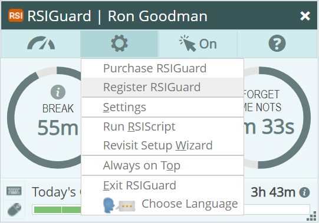 | | 2) If you're not sure how to bring the RSIGuard window up, click on the RSIGuard icon in the "system tray" by the Windows clock.
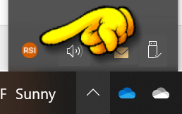 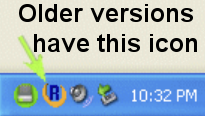 | | 3) If you already have a registration code, enter it and click Register.
Remember that registration codes that start with S or R or T are only intended for one time use. So, if you need a new code, click I need a new registration code.
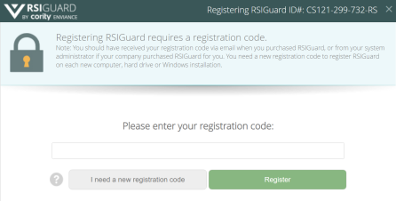
| | - RSIGuard is now registered!
| |
Back to top
I get an error when I try to register RSIGuard. What's wrong?
If you get an error message telling you that registration was not successful, here are some possible reasons:
- If your registration code starts with 'S': This code only works on the one computer for which it was originally issued. If you: changed computers; reinstalled Windows; are installing RSIGuard on a second computer; or if you didn't enter your RSIGuard ID# when you purchased RSIGuard, then you will need a new code. Click here to get a new registration code.
- If your registration code starts with 'T': Your code may have expired. Codes that start with a 'T' must be used within 30 days from when issued. Click here to request a new registration code.
- If your registration code starts with 'X': You need internet access while registering RSIGuard. Confirm (in a browser) that you can access www.rsiguard.com on the computer you are trying to register, and try again.
- If your code starts with 'C': Please note that this is not your registration code. This is your RSIGuard ID# which you can use to get a new registration code by clicking here.
-
If you are still having problems, you can contact support@rsiguard.com.
Back to top
I get an error when I try to install RSIGuard. What's wrong?
If you get an error when installing RSIGuard, there are two possible reasons:
-
You don't have permission to install software on your computer
-
You downloaded an incomplete copy of RSIGuard
If you don't have permission to install RSIGuard, you may need to request that an IT/IS administrator at your organization install the software for you. See the next FAQ item for other options.
If you have permission to install software, then the problem is likely an incomplete or corrupt download. To correct this, download RSIGuard again.
If you downloaded RSIGuard from anywhere other than the RSIGuard download page, you may need to clear your browser's download memory (cache). Why? Most browsers maintain a memory of previously downloaded files. Clear the memory. This step is not needed if you download from the RSIGuard download page.
Back to top
I don't seem to have rights to install software. Can I still use RSIGuard?
If you don't have rights to install software on your computer, you can still use RSIGuard. However, you should first consider that your organization may not approve of you using software they haven't vetted. If that's the case, the best strategy is to ask your IT team to review and approve the use of RSIGuard.
You can generally bypass installation rights issues by following this process:
-
Install RSIGuard on another computer (e.g., a home computer) where you do have rights to install the software.
-
Find the RSIGuard program folder. On most computers the folder can be found in C:\Program Files (x86), but on older computers it may be in C:\Program Files.
-
Copy the entire RSIGuard folder to a USB drive, cloud drive, or network drive that is accessible on the computer on which you have limited installation rights.
-
Copy the RSIGuard folder to the computer on which you want to use RSIGuard. You can copy it to any folder on your computer. Also, you can use RSIGuard directly from the USB drive, cloud drive or network drive.
-
Confirm that RSIGuard works on the new computer by double-clicking on RSIGuard.exe.
- Make sure that RSIGuard launches every time you log in. To do this, follow these steps:
- Open the Startup folder by pressing Win+R.
-
Type %appdata% and press enter to open your AppData folder.
-
Double-click Microsoft > Windows > Start Menu > Programs > Startup.
-
Right-click in that folder, select New, and select Shortcut.
-
In the Create Shortcut wizard, click Browse and go to the folder where you copied RSIGuard. Select RSIGuard.exe.
-
Enter a name for the shortcut (e.g., RSIGuard).
-
Click Next.
-
Click Finish. RSIGuard should now launch every time you log in.
If you want to stop using RSIGuard later, remove the Startup shortcut. To uninstall RSIGuard, remove the RSIGuard folder you copied to your computer.
Back to top
How do I get a receipt/invoice for my purchase?
If you need a receipt for an RSIGuard order, consider the following: -
If you purchased from a software reseller, please contact the reseller directly for your receipt or invoice.
-
If you purchased the software directly from our website, you can get a receipt from FastSpring (see your order confirmation for details):
-
If you don't know your order #, you can look it up on our system at the RSIGuard registration code page.
Back to top
My organization is tax exempt. How do I avoid paying sales tax?
If you are buying from our online reseller service FastSpring, please follow their instructions for tax exemption.
If you are buying RSIGuard directly from Cority, please let your account representative know if your organization is exempt from paying sales tax.
Back to top
What version of RSIGuard am I using and how do I get updated versions?
If you have an individual license for RSIGuard, you can periodically use the "Check for RSIGuard Update" item within the RSIGuard Help menu to see if a new version of RSIGuard has been released. 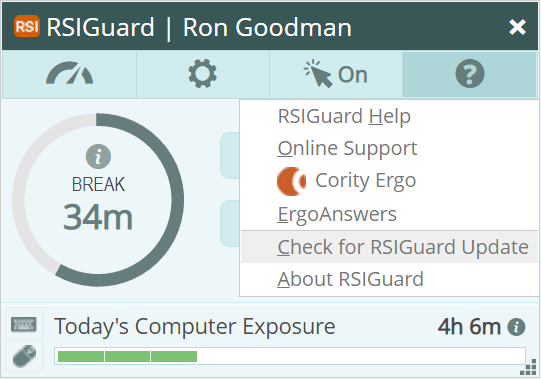
If a newer version is available, RSIGuard gives you the option of seeing what's new and downloading and installing it (if you have permission to install software on your computer). If you've already registered RSIGuard, the update is automatically registered since updates are free.
You can check the version of RSIGuard you have installed by:
- Windows: Clicking on the Help (?) menu and selecting About RSIGuard, or
- Mac: Clicking on the RSIGuard Menu and selecting About RSIGuard
Back to top
Do I need to uninstall RSIGuard before installing a newer version?
It is not necessary to uninstall RSIGuard before installing a newer version. The best way to get an update is to click the Help (?) menu, and select Check for RSIGuard Update. The update will be done automatically. However, if you downloaded an update manually, you may wish to exit RSIGuard before installing the new version to avoid possibly needing to reboot your computer.
Back to top
What is an RSIGuard ID# and how do I find out what mine is?
Each computer upon which you install RSIGuard gets a unique RSIGuard ID#. If you install RSIGuard on two computers, you have two RSIGuard ID#'s - one for each computer. If your RSIGuard ID# starts with the letter 'C', then your ID# will look like "CS-242-332-292-RS". Please include your RSIGuard ID# in any correspondence with us regarding registering your copy of RSIGuard.
- To find the RSIGuard ID# on the particular computer, go to the Help (?) menu and click About RSIGuard.
RSIGuard ID# is used to generate a registration code for one particular computer. That means that if you install RSIGuard on a second computer, it will have a different RSIGuard ID#, and you need a second registration code for the second computer.
Back to top
I want to move my RSIGuard data and settings to a new computer. How do I do that?
Can I copy/backup my RSIGuard settings when I install RSIGuard on a new computer?
If you use one or more computers or occasionally upgrade to a new computer, and your computers are on a network, then rather than copying your settings when you switch computers, the best solution is to use RSIGuard Cloud. This stores your settings in the cloud and synchronizes settings on each computer. Alternately, you can use the Roaming Profile feature. By configuring each computer to use a roaming profile, all your computers will share the same profile, and changing a setting on one computer will cause it to change on all of your computers. When you upgrade to a new computer and configure it to use the roaming profile, it will have all of your settings.
If your settings are on a computer without a network, and you are simply switching from one computer to another, you cannot use roaming profiles. You will need to copy the settings (and optionally copy/backup your DataLogger data as well) from the old computer to the new one.
To save your settings from your old computer:
- Press CTRL and click Toolgear > Manage Roaming / Cloud.
-
Check the Enable RSIGuard roaming profile box and select a folder to store the settings file (e.g., on your Desktop or in My Documents). Click OK.
-
RSIGuard will ask if it should create a Roaming Profile in the selected folder. Answer Yes.
-
Copy the Roaming Profile file (named RSIGuardRoamingProfile-LOGIN.rni, where LOGIN is your Windows login username) to a USB drive or network location.
On the new computer:
-
Copy the Roaming Profile file from the old computer to your new computer (e.g., to My Documents).
-
Install RSIGuard. When RSIGuard starts up, register it (or start a 45-day trial if you'll register later).
-
If you are prompted to do the startup wizard, click Next until it completes (ignore the questions).
- Press CTRL and click Toolgear > Manage Roaming / Cloud.
-
Check the Enable RSIGuard roaming profile box and select the folder where you copied the settings file.
-
Click OK. RSIGuard will import the settings.
-
If you wish, you can now disable the Roaming Profile feature by repeating step 4 and then unchecking "Enable RSIGuard roaming profile".
Although the ability to use Roaming Profiles exists in the Windows, Mac and Linux versions of RSIGuard, the user interface to enable it only exists for Windows. This is because Roaming Profiles are normally set up by organizations (with group licenses and custom RSIGuard installations that automatically connect to Roaming Profiles). If you want to set up Roaming Profiles on an individual Mac or Linux RSIGuard installation, it requires a little more work: -
Using a text editor, create a file with the following 2 lines:
update DataFolder [some-network-path]/Data
update ProfileFolder [some-network-path]/Config -
Save the file.
-
In RSIGuard, click Tools > Run an RSIScript (if that option isn't available, your organization has disabled this ability).
-
Run the text file you saved in step 2. Your data and settings should now be stored on the network in the subfolders Data and Config within your selected network path (these subfolders are the recommended names, but you can use any name you desire).
Note that [some-network-path] should be replaced by a location on your network where you want to store your RSIGuard data/settings.
Note also that you can point Mac, Linux and Windows installations to the same network location as the files are compatible between platforms.
Back to top
How do I uninstall RSIGuard?
If you've decided not to continue using RSIGuard, we'd appreciate hearing why. Please click here to tell us.
For Microsoft Windows:
If you had a system administrator install RSIGuard for you, you will likely need their assistance to uninstall RSIGuard as well. This is because your organization may have restricted your rights to install and uninstall software on your computer.
If you installed RSIGuard yourself or if you have rights to install/uninstall software, then you can do so by following these instructions:
-
Exit RSIGuard (go to Toolgear > Exit RSIGuard). If you can't do this step for any reason, you'll need to reboot your computer after uninstallation occurs to complete the uninstallation process.
-
Click Start.
-
Select Programs (or All Programs in Windows XP).
-
Select RSIGuard.
-
Select Uninstall RSIGuard and follow the prompts to complete the uninstallation
If you don't see the "Uninstall RSIGuard" option, you can also uninstall RSIGuard from the Windows Control Panel. To do so:
-
Click Start.
-
Select Settings.
-
Select Control Panel.
-
Select Add/Remove Programs.
-
In the list of programs shown, select RSIGuard.
-
Click Remove and follow the prompts to complete the uninstallation.
If this procedure gives you an error message, then you don't have the necessary rights to uninstall RSIGuard. You need to contact your system administrator.
If you are unable to uninstall RSIGuard using the above instructions, and cannot get assistance from your system administrator, you can try manually removing RSIGuard, but this is NOT a recommended way. Carefully follow this procedure:
-
Delete the RSIGuard Startup icon: go to Start > Programs > StartUp; find the RSIGuard icon (called RSIGuard, RSIGuard Stretch Edition, or RSIGuard Standard Edition) and right-click on it; select Delete from the popup menu.
-
Delete the RSIGuard shortcuts: go to Start > Programs; find "RSIGuard" and right-click on it; select Delete from the popup menu.
-
Reboot your computer. RSIGuard will no longer automatically start.
- (optional) If you want to also remove the RSIGuard program files from your computer, then after rebooting, use Windows Explorer to open the folder where you installed RSIGuard (usually C:\Program Files\RSIGuard) and delete the entire RSIGuard folder.
- (optional) If you wish to also remove RSIGuard from the list of installed applications in the Control Panel, you can use Microsoft Windows Install Cleanup from Microsoft.
For Mac OS X:
RSIGuard is installed using Apple PackageMaker, which is Apple's recommended standard method for installation. Although it does not provide an uninstaller, uninstalling on the Mac is simple. To uninstall RSIGuard, exit RSIGuard, browse to the Applications folder in the Finder, then select RSIGuard.app and drag it to the Trash Can.
Back to top
AutoClick
How do I drag stuff around without the strain of holding down the mouse button? My drag lock hotkey doesn't work, what's wrong?
The easiest way to drag something with the mouse is to use the DragLock hotkey. Tap the DragLock hotkey (do not hold it down), and RSIGuard will click and hold down the mouse button. Move the mouse or use the arrow keys to drag (i.e. to move or select something). To end the drag, either tap any key (except the arrow keys) or click the mouse. You can drag a window, drag to select things, drag to scroll in a window, or do anything else that normally requires holding down the left, right, or middle mouse button.
If drag lock doesn't work, make sure you are not holding the hotkey down. Just tap and release the hotkey to begin the drag lock operation.
Back to top
What are good choices for AutoClick hotkeys? Can I select new hotkeys?
A hotkey (or shortcut key) is a name for a keystroke like Ctrl-Shift-H or F8 that performs a certain function. For example, pressing the shortcut key Ctrl-ESC opens the Windows Start menu. AutoClick's KeyControl feature lets you create new hotkeys to do things like cause a single, double, or triple-click by pressing a particular keystroke (that you can select).
When you first run the Setup Wizard, RSIGuard lets you quickly define a group of hotkeys to perform various RSIGuard related functions (e.g., double-click, start a break, and many others), and it lets you pick which keypress combinations should be used. You can reassign each hotkey individually with any keystroke (e.g., Ctrl-X for a single-click, F2 for a double-click, and Ctrl-Shift-F5 for a triple-click). To do this, click the Setup menu and select Settings. From the KeyControl tab, click Add A New Hotkey to create a new hotkey or click Edit Selected Hotkey to edit a hotkey you already have. See the KeyControl feature for more information about setting up hotkeys.
When you choose a key combination for a hotkey, you should choose one that isn't used by the programs you will be working with. For example, Ctrl-R is not a good choice if you press Ctrl-R to reply to emails (e.g., in Outlook and Netscape Communicator) because the key will be reassigned to the new function. Since many people don't use the numeric keypad, the RSIGuard Setup Wizard suggests using it for hotkeys. If you use the numeric keypad but don't use the F-keys, you might want to use F-keys for hotkeys. After setting hotkeys, try taping masking tape or small labels to the keys you select to make finding and remembering them easier.
Note: Some programs intercept special keystrokes and may interfere with RSIGuard's hotkeys. For example, Windows reserves F1 for help, so it is better not to use F1 for an RSIGuard hotkey.
Back to top
RSIGuard sometimes causes unexpected clicks. What can I do?
RSIGuard has various features to prevent false clicks. For example, by default, RSIGuard doesn't click while you are typing, or after you have recently clicked the mouse. The default timeouts for these options may be too short or too long for you. You can fine tune these timeouts (and other settings) to optimize RSIGuard. Go to Tools > Settings. Select Advanced Settings from the AutoClick tab and adjust settings to your satisfaction. You may need to learn new mousing habits. For example, you need to know where you're going to click before you move the mouse because every time you pause, the mouse clicks. An undesired click can be overridden with the No Click hotkey. Some people wiggle their mouse around while thinking: this doesn't work with AutoClick. This habit is a good thing to change since it causes unnecessary strain.
You can use AutoClick Filters to prevent AutoClick from clicking in certain situations. Back to top
Is using AutoClick better than switching to an ergonomic mouse or a different kind of pointing device?
Many Repetitive Strain Injury sufferers try various ergonomic mice as well as alternatives to mice. People also try switching the hand that holds the mouse. Some solutions may be better than a standard mouse while others simply postpone pain by distributing the strain to different areas of your hands and arms. RSIGuard's AutoClick feature largely eliminates the need to click the mouse which is the source of most mouse-related pain. Furthermore, if you learn to relax your grip on the mouse, an ergonomic mouse may no longer even be necessary. Because AutoClick doesn't eliminate the need to move the mouse to point at things, it makes sense to use AutoClick with a device that you find helpful. Back to top
If the mouse cursor is in the way, how can I move it away without causing a click?
When you move the mouse away, either:
Move the cursor away and quickly tap the CTRL key (or SHIFT).
By tapping the CTRL or SHIFT key, you're telling AutoClick to skip the click it's about to do. After a while, this maneuver (move mouse, tap CTRL) becomes automatic. A few extra keypresses are a minor issue compared to all the clicks that you eliminate. or...
If the mouse cursor is in an edit field, move the cursor aside, but still in the edit field. That way, when the click happens, the typing cursor remains where it was. You can also move the mouse cursor to a neutral area, one that won't change the focus. Back to top
Sometimes, when I let go of my mouse, it slides a little, causing AutoClick to do a spurious click. What can I do?
One way to prevent this is to make sure the cord on your mouse is clear of desk clutter and ensure your mouse is on a flat surface. If that doesn't work, various mouse manufacturers make cordless mice that work very well with AutoClick. Also, you can increase Trigger distance in pixels (Tools > Settings > AutoClick). Such increase forces RSIGuard to wait for a longer mouse move before it automatically clicks, filtering out shorter movements that might occur when you let go of your mouse.
Back to top
Is there a way to temporarily turn AutoClick off?
There are several ways, depending on what you want to do. -
You can turn off AutoClick until the next time you click manually by using the Skip Next Click hotkey (which you can set from the KeyControl page under Add New Hotkey).
-
You can create a "Enable/Disable AutoClick" hotkey in the KeyControl page (under RSIGuard Functions). Pressing the hotkey will disable AutoClick if it's currently enabled, or enable it if it's currently disabled.
-
If you always want AutoClick off over a certain program, you can use an AutoClick filter to automatically change the AutoClick mode when the mouse passes over different windows. For more information, see AutoClick Filters in the online help.
Back to top
When I pass over an item with a tooltip, AutoClick clicks and prevents me from seeing the tooltip's text. What can I do?
Go to the AutoClick tab in Settings. Make sure that the Trigger Time is at least 8 tenths of a second (though 9 or 10 is preferable). Next, select Advanced settings. Make sure that the Delay AutoClick when a Tooltip appears by X tenths of a second box is checked. This will cause AutoClick to postpone clicking and allow you to read the text.
Back to top
Can I use AutoClick to reduce strain while playing games?
Playing games can be an extremely strain-inducing activity, so it's important to use common sense and moderation to avoid developing injuries. AutoClick can help in some cases though it is not an intended purpose. Some gamers have reported that they accomplish rapid firing (which normally requires rapid and constant mouse clicking) by assigning AutoClick's single-left-click to a hotkey. By holding the hotkey down, the key causes the mouse button to rapidly click over and over until the key is released. Some users place a weight on the key which causes the rapid-fire clicking to occur hands-free until the weight is removed.
Back to top
How can I make AutoClick click faster?
To make AutoClick click faster, go to Tools > Settings > AutoClick. Trigger Time controls how long it takes AutoClick to click once you stop moving the mouse. You can set it as fast as 1 tenth of a second. To set the Trigger Time below 7 tenths of a second, you must also turn off the ToolTip detection setting. To turn off ToolTip detection, click on the Advanced settings in the AutoClick tab. Uncheck the Delay AutoClick when a ToolTip help box appears box. This also means that ToolTips will not appear since clicking the mouse prevents a ToolTip from popping up. If you need to see some ToolTips, you can use the Skip Next Click hotkey and view ToolTips as usual.
Back to top
How can I make an AutoClick filter?
Below are two AutoClick filter examples: Example 1: Make a filter to prevent AutoClick from clicking in the Minesweeper game. - Go to Tools > Settings. From the AutoClick tab, select Advanced and then AutoClick Filters. Click Add New Filter.
-
From the drop-down box, make sure "program" is selected and in the "named" field, enter Minesweeper. In the "action" field, select don't autoclick, keep hotkeys active. Click Save.
-
You should see a new rule appear in the Filters list. Ensure that it is checked. Exit the Filters page. Click Save. The rule will be active.
Example 2: Make a filter to prevent clicking the Send button in Outlook or Outlook Express
- Go to Tools > Settings. From the AutoClick tab, select Advanced and then AutoClick Filters. Click Add New Filter.
-
From the drop-down menu, select the cursor is over a button line.
-
In most situations, you would enter the name of the button into the "named" field (e.g., Send). In Outlook, however, the Send button is not actually a button but is instead part of a toolbar. So we need the toolbar's "internal name". RSIGuard can find it for you if you just position the mouse cursor over the Send button for a second or two. You will notice that the "named" field is automatically filled in with something like: 'New Message:5600896d:834'.
-
In the "action" field, select don't autoclick, keep hotkeys active. Click Save.
-
You should see a new rule appear in the Filters list. Ensure that it is checked. Exit the Filters page. Click Save. The rule will be active, although it will apply to all the buttons in the Send toolbar.
Read the AutoClick filter documentation for more information. Back to top
How can I prevent AutoClick from clicking on a link in an email?
If you use Outlook (or some other email clients), hovering over a link displays where the link will go to. This can help you spot if the link is safe (i.e. goes where you think it's going). But, if AutoClick is enabled, it will click on the link before you have time to determine the link is or isn't safe. AutoClick can tell that it is hovering over an email, and thus you can create an AutoClick filter to not click on the body of an email, and thus not click on links within an email.
To do so, go to Toolgear > Settings > AutoClick tab. Click Advanced, then click AutoClick Filters, and create a new filter. The filter sentence may vary, but in most versions of Outlook, should read "When cursor is over button named 'Message', don't AutoClick, keep hotkeys active". If you use a different email client, the AutoClick Filter documentation explains how to identify the window/button that replaces "button named 'Message'".
If the filter is set up correctly, RSIGuard won't click in the body of an email, but will still click on other parts of the email client (e.g., other buttons, messages, etc.) By using this and other filters, you can make sure AutoClick provides most of its benefit, and is only disabled if and where it needs to be.
Back to top
Can I make an Alt-Tab hotkey?
Yes. Here are 3 approaches to simulating Alt-Tab using hotkeys:
You can create a hotkey that brings the "next window" to the foreground, cycling through all your open windows. Each time you press it, a new window comes to the foreground of your desktop.
To set up a hotkey like this, go to Tools > Settings > KeyControl tab. Click Add New Hotkey. Pick the key you want to use to move to the next window. From the Select a Category field, select Do RSIScript Command. In the Enter RSIScript command field, enter window next.
Use the following if you're trying to easily access one of several windows that you typically have open. Suppose you regularly access an email window, a web browser set to your CRM application and a web browser set to a database. You can set up 3 hotkeys -- one to bring up each window. Rather than cycling through windows, a single keypress will bring up the specific window you want.
To set up a hotkey like this, go to Tools > Settings > KeyControl tab. Click Add New Hotkey. Pick the key you want to use to bring up the window. Under Select a Category, select Do RSIScript Command. In the Enter RSIScript command field, enter activate Outlook to activate a Microsoft Outlook window. Then, replace Outlook with any unique text in the title bar of the window you wish to activate. For example, if you want to bring up the Internet Explorer window that is open to Salesforce, you can use 'activate Salesforce'.
Use the following to simulate Alt-Tab functionality.
Go to Tools > Settings > KeyControl tab. Click Add a New Hotkey. Select a Keypress to use for the hotkey. Then, under Select a Category, select Type Text. For the text, enter: <alt<tab>
(Note that there are two <'s but only one >)
To use the hotkey, press the key you assigned it to. Use the arrow keys to select the window to open. Then tap the Alt key to select that window.
Back to top
How can I remap keys on the keyboard?
KeyContol gives you the ability to assign new functions to keys on the keyboard using hotkeys. If you want to move the Tab key onto the Q key to make it easier to type (since it can be very frequently used compared to Q). You could assign a hotkey to the Q key that presses Tab. Then you could assign a hotkey to Tab and Shift+Tab to type 'q' and 'Q' respectively. If you use Shift+Tab and/or Ctrl+Tab, you could assign hotkeys to Shift+Q and Ctrl+Q to type them as well. You could even put Tab in multiple places if you want to move your 'Tab key usage' around more.
Back to top
RSIGuard doesn't count some keystrokes/mouse events. AutoClick doesn't click on certain items. What can I do?
When RSIGuard is run normally, Windows security prevents it from interacting directly on an application running as an administrator (or that otherwise has elevated privileges, e.g., from User Account Control). In that case, RSIGuard cannot:
-
record mouse/keyboard events in those applications,
-
perform AutoClicks on those applications.
There are 2 ways for RSIGuard users to manage this issue.
-
For most users, few applications are run in a privileged context, so you can ignore the issue. In the rare situation where AutoClick can't click, you do the desired click manually. The recording of key events is lost, but the impact on total counts would be negligible.
-
Run RSIGuard as an administrator. Doing so will require that you have administrator access on your computer. Also, if you have User Account Control configured, you may have to approve running RSIGuard as an administrator every time it runs. To configure RSIGuard to run as an administrator:
Click Start, and then click All Programs.
Click Startup.
Right-click RSIGuard Stretch Edition and click Properties.
Click the Shortcut tab in the properties window, and click Advanced.
Click Run as administrator and click OK.
If UAC is enabled, you'll get a prompt every time RSIGuard launches. You can disable UAC. But since some users need UAC's security, this method leaves UAC enabled while avoiding the prompts. However, this method requires some technical skill.
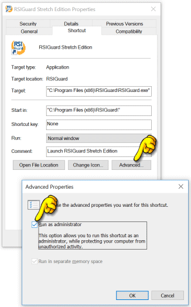 |
Back to top
Autoclick doesn't click on OS X 10.14 (Mojave) or later. What can I do?
Apple added a security feature in OS X 10.14 that requires you to grant RSIGuard the ability to click the mouse for you. To grant RSIGuard the necessary privileges to use AutoClick:
-
In Settings, go to Security & Privacy > Privacy > Accessibility.
-
Check RSIGuard.
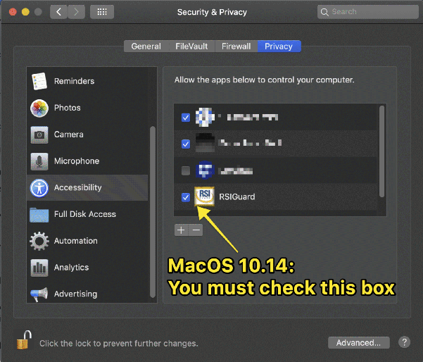
Back to top
BreakTimer
How can I adjust the frequency of breaks?
To adjust break frequency, go to Toolgear > Settings > BreakTimer. For complete details about configuring the BreakTimer or to watch a short video on setting up BreakTimer, visit BreakTimer settings documentation. Back to top
I don't have any discomfort -- why should I take breaks?
An RSIGuard user once wrote: As a 41-year-old software engineer, I had no pain using the computer. I didn't know that many people develop Repetitive Strain Injury (RSI) over the course of 15 or 20 years before having any pain. I figured I was immune to RSI and that I didn't have the 'gene' for it. When the pain first began, I ignored it. Now, I can't ignore it. For now, I can still work, but it has forever changed my stamina, and I may have pain as long as I use computers. It affects most everything I do.
What's the greatest source of discomfort for workers in the computer industry? Most people guess carpal tunnel syndrome, tendonitis, or more generally, some form of computer-related repetitive strain injury. While those may be the common injuries brought on by repetitive computer use, it is reasonable to argue that the real problem is a lack of ergonomic awareness and widespread denial that these injuries can occur to anyone.
The US Bureau of Labor Statistics reported that RSI's more than tripled in frequency in the '80s and '90s. They account for $15-20 billion in workers' compensation costs (1/3rd of all workers comp costs) from roughly 1/2 million annual injuries.
People often assume that they won't have RSI problems because they have no symptoms now. But repetitive strain injuries only become apparent after repetition. Therefore, if you use computers frequently, you likely have already begun to injure yourself.
For example, in one type of injury, a tendon passes through a tunnel in the wrist and builds up scar tissue over time. There are generally no or few symptoms as the scar tissue builds up. By the time the scar tissue becomes so extensive that discomfort is constant, the tissue is blocking movement in the tunnel and may require drastic measures such as surgery to reverse.
If you use a computer, you are at risk and need to understand that denial will not protect you! Consider this experiment. Tell an asymptomatic person about a new ergonomic "solution," and they're likely to tell you that they know someone who could "really use something like that." It's rare for the person who is pain-free to think that they need to examine their own ergonomic situation or that they might be injuring themselves. But millions of people are well on their way to symptomatic injuries and simply aren't aware of it yet. These people are prime candidates for ergonomic improvements, but without awareness, are unlikely to take preventative steps.
While RSIGuard alone can't ensure you won't get RSI, it can help. RSIGuard helps reduce your strain at the computer (with AutoClick), gives you meaningful breaks that are tailored not only to your physical health, but also to your willpower (with BreakTimer), keeps you conscious of your behavior (with ForgetMeNots), and keeps track of your progress (with DataLogger and the companion program UserInsight).
Most people, especially those without symptoms, have a hard time disciplining themselves to change their patterns. RSIGuard was designed with this in mind. It was created with feedback from real people who use it, and thus each feature has been carefully crafted to help you overcome the behavior challenge and stay healthy.
Back to top
Won't taking breaks reduce my productivity?
The US National Institute for Occupational Safety and Health (NIOSH) has released a study showing that regular short rest breaks can reduce eyestrain and musculoskeletal discomfort for computer operators without reducing productivity. Workers who took four 5-minute rest breaks spaced throughout the workday, in addition to their regular two 15-minute breaks, consistently reported less eye soreness, visual blurring, and upper-body discomfort than those who just took the two 15-minute breaks. Quantity and quality of work in both groups was the same. A Cornell study showed that breaks increase productivity.
Click on these links for more detailed information:
- Cornell Study shows that computer-assisted breaks boost productivity
- Strategic Rest Breaks Reduce VDT Discomforts Without Impairing Productivity (NIOSH)
- Computer terminal work and the benefit of microbreaks
Back to top
I don't like BreakTimer popping up and interrupting me. What can I do?
Having the break window popup when a break is needed helps ensure you take your breaks. But for customer-facing jobs, call-center/phone-intensive work, or other jobs where interruptions are too intrusive, RSIGuard offers an alternative way, called Polite Mode, to let you know a break is needed. In this mode, BreakTimer displays an indicator ( 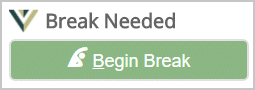 ) that tells you that you need to start your break. As soon as you click on it, your break begins. If you don't click on it, you are not interrupted or prevented from working.
The downside to Polite Mode is that it's easy for you to ignore the suggestion to take a break. Thus, a hybrid option lets you use Polite Mode, but starts the break automatically if you take too long to start the break yourself. You specified the "too long" threshold.
For details on how to use Polite Mode, see the online help for 'BreakTimer Interaction Style'.
Back to top
I don't want breaks to pop up at certain times/in certain situations?BreakTimer filters let you tune when RSIGuard will ask you to take breaks. You can configure rules to prevent breaks in certain situations. By default, RSIGuard for individuals (and most organizations) includes default filters. The default filters are focused around not popping up a break that would be seen if you are sharing your screen, or are using online meeting software like Zoom or Microsoft Teams. If you are sharing the screen on which notifications popup (your primary monitor), RSIGuard won't popup a break (it will still present breaks if you are sharing your non-primary screen in Microsoft Teams). You can add a filter to pause breaks if you are using certain applications, are on certain webpages, or are using critical applications. To see the full range of what is possible with BreakTimer Filters, see the online help for 'BreakTimer Filters'. Back to top I've tried using BreakTimer, but the breaks are too frequent/intrusive for me?
Taking breaks is inevitably disruptive if you are trying to work non-stop. Of course, working non-stop can lead to injury, and the purpose of BreakTimer is to avoid that. So, ask yourself if the break suggestions are really too frequent, or if you are just working too hard or too long. If you decide that the breaks really are too frequent or interruptive, there are several solutions.
You can avoid the "surprise factor" of the break window by realizing that BreakTimer gives you several warnings that a break is approaching: the "Time to Next Break" value on the main window shows how long it estimates it will be until the next break; the blinking RSI icon in the system tray tells you a break is only a minute or 2 away; and an optional sound can be played about 1 minute before a break starts. Furthermore, BreakTimer automatically will attempt to wait for you to finish what you are typing or doing with the mouse before starting a break. Finally, RSIGuard will never start a break in the middle of an activity like dragging and dropping with the mouse.
Next, to be sure that you are really taking breaks are as frequently as you think, try to notice the "Time since Last Break" value on the main window. It tells you how long ago you completed your last break, and can often surprise you with how long ago it actually was.
If you still want to reduce the frequency or placement of breaks, BreakTimer has numerous settings that control how breaks occur. The most important two settings to consider if you feel breaks occur too often are the "Minimum time between breaks" setting and the "Blackout Times" settings. These and other settings can be adjusted to reduce the frequency of break suggestions as well as control when BreakTimer is allowed to interrupt you with break suggestions.
Back to top
BreakTimer never (or rarely) tells me to take a break. Why not?
BreakTimer's model generally tries to suggest breaks when you have done too much mousing and keyboarding without resting enough on your own. If you regularly take pauses from working on the computer, BreakTimer acknowledges these "natural breaks" and will make fewer (or even zero) break suggestions.
You can monitor how long it will be until your next break suggestion by watching the "Next Break" box on the main RSIGuard window. The time until next break counts down while you are working, but can get longer while you rest. That will often make it clear why you aren't getting break suggestions. For example, say it shows 50 minutes until your next break. You work for 30 minutes. Now it reads about 20 minutes. You get a phone call and don't use your computer for 10 minutes. BreakTimer acknowledges this rest from keyboarding and mousing and the time until next break may have gone back up to 40 or 50 minutes.
If the 'Next Break' time doesn't make sense to you, double-click on the Next Break time and RSIGuard will provide a dynamic detailed view of how it is calculating the time until next break.
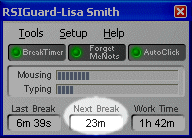
|
|
If you want more break suggestions, you can adjust the BreakTimer settings to either:
-
Be more sensitive to either your keyboarding, your mousing, or both
-
Give some breaks based on elapsed time rather than activity (by setting a "maximum time between breaks")
To adjust these settings, see the BreakTimer setup documentation.
Back to top
I use another break timer. Can I continue to use it?
RSIGuard's BreakTimer is the most advanced break timer available. It tells you when to take breaks when you really need them rather than after a preset number of keystrokes, mouse movements, or time. However, if for some reason you wish to use another break timer, disable BreakTimer (either from the Settings dialog or from the main window). Although RSIGuard has not been tested with all other break timers, it should not conflict with any of them.
Back to top
I thought RSIGuard modeled my pain. Why must I take a break now when my wrists don't even hurt?
Actually, RSIGuard models your strain. Strain usually doesn't hurt until it reaches an extreme. The point of the BreakTimer is to tell you to rest before you reach a painful state. This lessens long term damage and also minimizes pain you experience. Your strain threshold varies each day, so some days you may experience pain before RSIGuard tells you to take a break. If this happens with any regularity, then during a break use the "Adjust Break Frequency" button or adjust your settings in the Settings dialog under BreakTimer.
Back to top
How does RSIGuard compute/measure strain?
Each action you do during working at the computer affects the strain calculation. Keyboard strain is a function of which keys you use (e.g. Ctrl-X causes more strain than plain X, and Shift-Ctrl-F9 causes more than Ctrl-X) as well as how quickly you type. A period of time with no typing relieves some keyboard strain, moreso if there is no mousing either. Mouse strain is a function of how much mouse moving you do combined with how much clicking, dragging, double-clicking, etc. Each action is assigned an appropriate amount of strain and actions that take advantage of AutoClick features are appropriately reduced in assigned strain. Again, a period of time without mousing relieves accumulated mouse strain. Although there are other factors, this is the basic idea behind BreakTimer's strain calculation. For the more math minded, the unit for strain is arbitrary but absolute, constant, and comparable between a user over time as well as between different users. In the display that shows typing and mousing strain, however, strain is actually show as the % of strain accumulated towards the threshold that triggers a break (i.e. current-strain divided by break-inducing-strain-threshold).
Back to top
How is a natural break different from and RSIGuard break?
A natural break is any time you stop working at the computer on your own. Because natural breaks are often breaks from the computer during which you do other work, RSIGuard conservatively assumes that natural breaks allow you to rest somewhat from strain, but not as much as during an actual break. Therefore, to make RSIGuard's model work, it is important that during an RSIGuard-imposed break that you really rest. Get up and walk around and/or stretch. Do not do other work that is stressful to hands, eyes, shoulders, etc.
Back to top
How does RSIGuard work with voice recognition?
RSIGuard differentiates between your typing and the text typed by voice recognition (e.g., in programs like Dragon Dictate, Microsoft 365 Apps Dictate, and Google Docs "Voice Typing"). In general, text typed by voice recognition software is not counted as typing by BreakTimer (or DataLogger). An exception is that individual keys pressed using the Dragon Dictate command "press KEY" are counted as keystroke activity.
Navigating within a document using commands like "move to end of line" moves the typing cursor, not the mouse pointer, and thus do not impact mouse usage counts. However, Dragon allows you to move the mouse pointer itself (e.g., with "mouse grid"). RSIGuard does not differentiate between your mouse movement via a pointing device versus "mouse grid" commands, and thus this type of mouse movement adds to activity counts.
The result of this is that in Dragon, you will still get breaks after a fair bit of voice command work that includes some mouse activity or use of the "Press KEY" command, especially if you use a "Minute-by-Minute" work restriction. In the Microsoft and Google Dictate tools, you will likely get more breaks and more usage recorded since they both still require you to use the keyboard and mouse more often than Dragon. Back to top
Sometimes after being away from my computer, BreakTimer will initiate a break shortly after I return. Why?
There are a few possible reasons for this.
-
If you have set a maximum time between breaks (e.g. to 120 minutes) and have the "give me a break even if I take a long natural break" setting checked, you will get breaks at least once every 120 minutes (or whatever you have the maximum time between breaks set to).
-
Some software will prevent your computer from being "idle" to prevent the display of screensavers. They do this by occasionally simulating the press of a keystroke or a mouse event. Although RSIGuard tries to detect this, it may not always be able to and therefore may believe you are continually working. If you have a maximum time between breaks set, you will get regular breaks even when you are away from the computer (regardless of whether or not you have the "give me a break even if I take a long natural break" setting checked.)
-
A daily work restriction could be reached shortly after returning to the computer that triggers a break.
-
Some other reason.
If you can't figure out why, please follow the following steps:
-
If the break window is up, notice the text in the title bar of the break window.
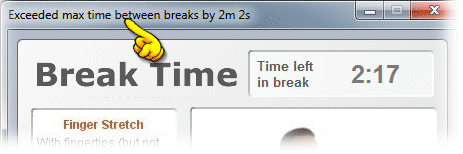
It tells you why RSIGuard is giving you a break and will often provide the clue necessary to understand the break suggestion and possibly how to adjust the settings if you want to change how breaks are suggested.
-
Double-click on the "Time to Next Break" window on the main panel.
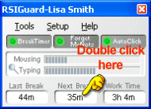
If a break is already in progress, click the 'Postpone 2 Minutes' button so you can access the main panel.
-
You'll see a window like this:
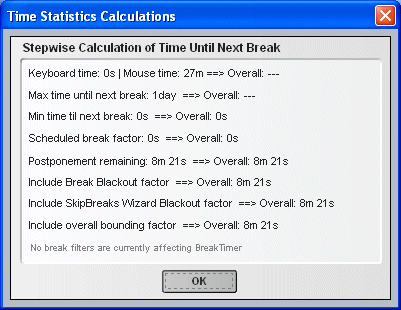 -
The next time you return to your computer after an absence of over an hour, and the "Next Break" says you have a break coming in less than a few minutes, repeat step #1. Then send the information in the window to Technical Support. We will do our best to help you determine why you got the unexpected break. If you send an email, please include a phone number so we may contact you interactively if needed.
Back to top
What are the optimal settings for the BreakTimer to prevent injury? How does BreakTimer decide how to time breaks?
RSIGuard's BreakTimer model is based on research that has been done with respect to breaks and microbreaks by the National Institute of Occupational Safety & Health (NIOSH) and Cornell University, as well as our own research on strain exposure using surface electromyelography (sEMG). Guided by this research, we believe that our break scheme is effective at reducing the risk of injury while maintaining productivity. However, there is no research that provides any significant guidance as to how to define the optimal break schedule as a function of job type/intensity. This is due in significant part to the fact that before RSIGuard was developed, there was no cost-effective way to measure the strain exposure of computer users.
Because BreakTimer is uniquely able to consider the user's work intensity, it gives break suggestions on a non-linear schedule that varies according to the user's task and intensity level. It is widely accepted: that breaks and microbreaks help; that breaks should be more frequent if the user works harder; that user psychology can reduce the benefit of breaks if they appear intrusive to the user; and that computer-suggested breaks can be less frequent the more the user rests on their own. However, the research is still too young to give objective guidance on precise schedules that will achieve a particular risk of injury for a particular user.
BreakTimer is designed to give a break schedule that logically conforms to the available research and that intelligently complies with experientially-based advice about break schedules commonly given by doctors and therapists (see the Break Timer Analysis for more information). We believe from a logical and anecdotal standpoint that more breaks means lower injury risk. However, there is obviously a point of diminishing returns where additional rest does not significantly reduce injury risk, where user resistance to breaks would become intolerable, and where productivity would suffer. The initial wizard interview that RSIGuard gives to each new user attempts to balance these factors to create an optimized break schedule based on our experience and the feedback from thousands of users. For that reason, we recommend letting users use the setup wizard for their initial setup. If users complain that breaks are too frequent, then reducing the frequency of breaks may be indicated simply to maintain willing compliance. If users are being injured too frequently, then increasing the frequency of breaks may be indicated.
That said, there are researchers that are looking at this issue to help us improve our model and to help provide additional guidance to end-users. Futhermore, if your organization is willing, we encourage you to help us by making your user settings, usage information, and injury statistics available so that we can further develop our recommendations for you and future RSIGuard users. If this is a possibility, please contact Technical Support.
Back to top
Why does BreakTimer lock my keyboard and mouse during breaks? Can I disable that?
You may be misunderstanding the idea of the BreakTimer.
The purpose of an RSIGuard break is to get you to stop using the computer. While the BreakTimer window is displayed, you should not be using the keyboard or mouse -- you should be either resting or doing non-computer activities. If you must use the computer, however, realize that you are generally not "locked out". You just need to postpone the break or skip the break using the Postone or Skip buttons.
If you keep typing/mousing during a break, then there is no point to the break. Thus BreakTimer gives you the choice to either take a rest from the computer (in which case the keyboard and mouse won't be used), or to reject the suggestion of the BreakTimer model to rest (by clicking Postpone or Skip).
Finally, if you don't want breaks to start automatically (thus forcing you to either not use the keyboard/mouse or click skip/postpone), you may use BreakTimer's polite mode. This is generally the appropriate choice for Call Center, and other customer-facing or phone-intensive jobs.
Back to top
DataLogger
What kind of data is recorded by DataLogger?
RSIGuard stores how long you work and how long you rest, what kind of work you do (mouse vs. keyboard), how many words you type and the rate at which you type them. It also records statistics about how often you type each key, how long you take to find the key, and how long on average you hold it down. It also records information about breaks taken, breaks skipped, breaks postponed, and time spent in breaks. These statistics can be viewed in reports, and are also used by other features (e.g. BreakTimer, Work Restrictions, ForgetMeNots) to dynamically adjust to your work patterns. It does not record words that you type, or the order of keys. It does not record which applications you use. There are no direct productivity measurements.
Detailed information about recorded data is available in the document A Detailed Analysis of RSIGuard's DataLogger (which is also accessible from the Help menu of the UserInsight program).
Back to top
How do I access the data recorded by DataLogger? Where is this data stored?
The data recorded by RSIGuard is stored on your computer, on your organization's network, and/or in the cloud. Unless your organization has restricted access to it, the data in those files can be viewed from the Data menu () of RSIGuard.
If you want more technical details, by default, on Windows, this data is stored in %appdata%\RSIGuard. However, if your organization installed RSIGuard for you, or if RSIGuard detected that it couldn't use this location, then data may stored somewhere else. If your organization has not restricted access to viewing/changing the location, you can click on Setup, "Profile Management", "Manage Roaming Profile" and look at the Roaming Data field to see where RSIGuard stores data.
Back to top
Can I store data on a network/Cloud Drive?
Storing usage data and/or profile settings to a network has the advantage that your data is accumulated across all the computers you use, and settings follow you between all your computers.
Individual users of RSIGuard can store their data on a network, or cloud drive (e.g. Google Drive, Microsoft OneDrive, etc.) Click on Setup, "Profile Management", "Manage Roaming Profile" and set the Roaming Data and/or Roaming Profile field to the network/cloud location.
However, there are potential issues with cloud storage. Cloud services sync data to the cloud at different intervals, and using different mechanisms. So, if you have multiple computers pointing to the cloud, changes may not be properly reflected if you switch between computers faster than the synchronization of cloud data occurs. Or, if your cloud service saves all edits, then RSIGuard's periodic updates to the data file will generate large numbers of versions of the data file. This is not an issue for a network drive (for which RSIGuard smoothly handles shared data, intermittent connections, etc.)
If you use RSIGuard as part of an organizational license, your IT department controls if data is stored on a network or on your local computer.
Back to top
Why is it valuable to collect this data?
Collecting data can provide guidance about how you can lower your risk of discomfort or injury. See the Desktop Risk Action Report for ideas. If you develop discomfort, work pattern data you collected prior to symptoms may help an ergonomist, doctor, or other health professional understand what is causing your issue and guide them in planning your treatment. We have received very positive reports from doctors on the informative value of UserInsight graphs that patients have brought them. If you collect the data after an injury as well, the data can help you understand whether or not you are reducing your work intensity and whether or not there are work patterns of yours that lead to pain.
Back to top
Am I risking an infringement of my privacy by allowing this data to be collected?
Cority takes privacy and data privacy very seriously. RSIGuard's data monitoring is specifically designed to tell about your ergonomics only. A detailed RSIGuard privacy discussion is available in the DataLogger document. For example, unlike some competitive products, we specifically do not record what applications you are using. Therefore, your company can see how much you use the computer, but not what types of activities you do (e.g. email vs. word processing vs. web browsing). We hope that individuals and organizations will appreciate the importance of privacy and similarly respect our decision to respect the privacy of RSIGuard users.
Back to top
When I use Remote Desktop Connection in full-screen mode, RSIGuard doesn't count keystrokes. What's the solution?
This seemingly simple question has a surprisingly complex answer. Be sure to read this entire answer, because solutions for various scenarios are described.
Background: Remote Desktop Connection (RDC) can send special keystrokes (e.g. Alt-Tab) to the local computer or the remote computer. By default, it sends these keystrokes to the local computer if RDC is not maximized, and to the remote computer if it is maximized. This makes sense, because when RDC is maximized, the idea is that your experience should be exactly as if you were on the other computer and the local computer were not involved. To get low-level key combinations like Alt-Tab and Ctrl-Alt-Del to be sent to the remote computer, RDC intercepts keystrokes and sends them directly to the remote computer in a way that prevents local applications (including RSIGuard) from detecting the keystrokes.
Solution 1: If you use your local computer as a "dumb" terminal to access another computer, it generally makes most sense to install RSIGuard on the remote computer (and not on the "dumb" terminal). That way, all of RSIGuard's context-sensitive features (e.g. AutoClick filters, BreakTimer filters, AutoClick click-prevention features, etc.) can function properly.
Solution 2: If you generally use both the local and remote computer, it can make sense to install RSIGuard on both machines. But if you want RSIGuard to aggregate your usage data (i.e. your data is stored on a network or within the OES), then you should use RDC in fullscreen mode - otherwise keystrokes typed when the RDC window is foreground (but not maximized) will be counted twice. Alternately, you can use the ErgoCoach Remote Terminal feature. Solution 3: If you only want to install RSIGuard on the local computer, but you use both the local and remote computer, you can change the default RDC behavior by clicking Options on the RDC opening window, selecting "Local Resources", and adjusting the "Keyboard option" (to "On This Computer"). In this scenario, RSIGuard on the local computer will count all keystrokes on the local and remote computer, even when the window is maximized. But Alt-Tab and Ctrl-Alt-Del will always be sent to the local computer.
Notes: If you use RDC to log in to another computer as a different user (e.g. for testing purposes, or system administration), and the remote computer has RSIGuard installed, the remote installation of RSIGuard will count the usage under the different user's account (since RSIGuard records data based on who is logged in).
This issue also applies to VMware sessions, and may apply to other terminal applications with analogous functionality.
Back to top
How accurate is DataLogger data?RSIGuard's ability to count keystrokes and mouse clicks is generally very accurate. Outside of specific situations, counts should be essentially perfect. But there are situations that prevent it from capturing every event. In most situations, the measured value will be within 0.1% of the actual measure for Windows English-Only version. The International Edition will typically be within 2-3% of the actual measure. For the vast majority of cases, this disparity has no impact on the use and interpretation of the data. RSIGuard's ability to measure breaks, natural breaks, time on computer, and mouse movement are generally very accurate because they aren't impacted by very small discrepancies in keypress/mouse-click event counts. Exceptions to this accuracy are: - If RSIGuard is not permitted to see administrator/protected events, those types of events won't be counted. This isn't typical for most users.
- In virtual/terminal environments, events on the host or remote computer may not be counted if RSIGuard is not installed on both computers. Furthermore, events could be counted twice if RSIGuard is on both computers, and the ErgoCoach virtual terminal feature is not configured properly to prevent double-counting.
- If RSIGuard isn't running (e.g. user exits RSIGuard, or before the user has logged in, or the brief time after login but before RSIGuard is running), events are not counted.
Back to top
I use RSIGuard on my Mac/Linux machine. Can I view my RSIGuard data? Yes, but how you view it depends on a few things. When RSIGuard is used as part of Office Ergonomic Solution (OES), RSIGuard data is viewed via the OES Desktop Summary in the dashboard. To view your data or graphs, click the Data menu, and select Desktop Summary. This is a web interface and works equally well on Windows, Mac and Linux. Some OES users can also log into OES via a web browser on your computer, tablet or phone to view data there as well. 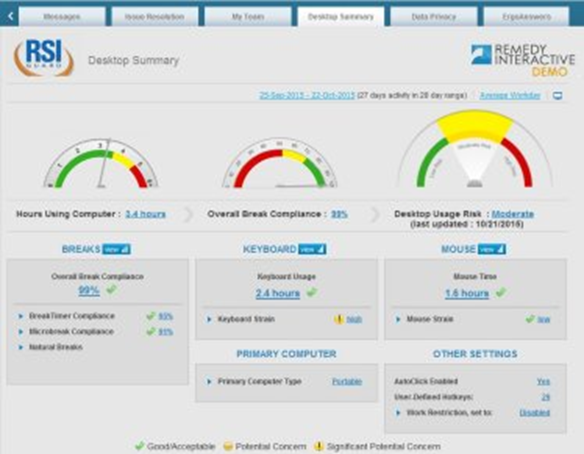
If you use RSIGuard standalone (i.e., you installed RSIGuard by downloading it from our website, or your organization uses RSIGuard without OES), then you can only view RSIGuard data using the Windows UserInsight application.
However, the data files produced by RSIGuard are identical on all platforms. So, if you have access to Windows (e.g., via Parallels on Mac, Wine on Linux, or a native installation of Windows) you can view your data by installing UserInsight. The easiest way to install UserInsight is to install the 45-day trial of RSIGuard. If you don't want RSIGuard to run on the Windows installation, you can disable it by deleting the RSIGuard icon from the Startup menu.
Finally, with UserInsight running, you need to browse to your RSIGuard data. By default your data is in your home folder (e.g., for OSX, /users/username/Library/Application Support/RSIGuard/Data/username.tid. For Linux, /home/username/.RSIGuard/Data/username.tid.)
ErgoCoach
How does ErgoCoach measure how I use multiple monitors?
ErgoCoach's multiple monitor tools include a feature that measures where you spend time looking at your monitors. ErgoCoach uses this information to create personalized recommendations for optimal monitor position.
Since RSIGuard can't actually see where you are looking, it uses various estimation techniques, including:
-
Where the mouse pointer was last clicked, or moved to
-
Where windows have recently been opened or activated (e.g. by clicking, or Alt-Tabbing)
-
Where you are typing
The algorithm considers these factors together, and only considers recent activities in determining location.
The algorithm is necessarily imperfect, but for most users it provides a fairly accurate estimate of their monitor use that helps guide monitor placement. But be sure use common sense. For example, a user who has a monitor that displays ongoing information to them (e.g. status of a network, power grid, or video security system) might spend a lot of time looking at a monitor, but never actually interacting with that monitor. In those cases, this feature would substantially understate how much that monitor was in use. Be sure to consider this when viewing associated monitor placement recommendations.
Back to top
ForgetMeNots
I can't type when a ForgetMeNots reminder appears
If you can't type during a ForgetMeNots message, you have MicroBreaks enabled. The intent is that during a ForgetMeNot, you must stop working for at least 12 seconds (or however long you've set Microbreaks to last). You can disable MicroBreaks if you do not like them by going to the ForgetMeNots tab in RSIGuard Settings.
Back to top
Why am I getting new ForgetMeNots reminders I don't recognize?
The messages ForgetMeNots shows you are randomly selected from the messages you select in the ForgetMeNots tab of RSIGuard Settings. In addition to many built-in messages, you may also occasionally see messages that RSIGuard adds to your message list because it notices a typing or mousing behavior, because ErgoCoach has added messages, because the online ergonomic assessment has added messages related to issues identified during your self-assessment, or because your organization has added new messages. Back to top
Miscellaneous Questions about RSIGuard
Is there a Mac, Unix or Linux version of RSIGuard?
RSIGuard is generally available for all modern Windows and Mac OS X versions. Visit our download page from a Mac or a PC to download the software for your platform. We don't actively maintain RSIGuard for Linux because: there are many Linux distributions; creating packages is a heavy effort because Linux environments have widely different package dependency, deployment, and format variations; and the Linux user base is relatively small at most organizations making it difficult to sustain the necessary technical resources to provide acceptable support. Even at individual organizations, Linux users typically diverge and have different configurations. If your organization has a large group of Linux users with a consistent configuration, we may be able to provide a Linux version. However, it will not have the same level of support as our Windows and Mac versions. Inquire with specifics about the Linux configuration if you wish to explore this further.
Back to top
Is RSIGuard compatible with my software?
Yes. RSIGuard is used in thousands of environments, with thousands of applications of all types. There are no known incompatibilities. RSIGuard is compatible with all versions of Windows (up to Windows 7). It is also compatible with Mac OSX 10.3.9 or later. RSIGuard is also compatible with Red Hat Linux 4/5 Gnome or KDE (only available for site licenses). RSIGuard is usable on most Citrix-like thin-clients (for site licenses) and can be used in VMWare or Remote Desktop Connection.
Back to top
What version of RSIGuard do I have? Which version of RSIGuard do I have installed? Here's are a few ways to determine which version of RSIGuard you have installed. If RSIGuard is running, the easiest way to see the version is to click the Help menu and select the About RSIGuard menu item. The version will appear in the About RSIGuard screen. If you hover the mouse over the version number, you'll see more detailed information about the version. It looks like this: 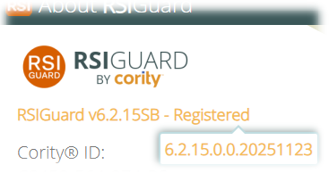
If RSIGuard is not running, you can also check the installed version by using Notepad (or another text editor) to open the file c:\Program Files (x86)\RSIGuard\Version.xml. This file will include the version number. On the second-to-last line, you'll see the version: 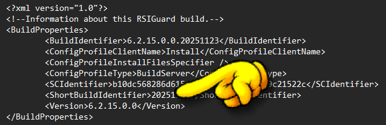 If you installed RSIGuard from an MSI (Windows) or DMG (Mac), the filename of the installer always includes the version number. E.g., RSIGuard-Install-v6.2.15SB.msi
Back to top Which versions of Microsoft Windows/OS X can I use with RSIGuard?
RSIGuard v6 runs on all versions of Windows from Windows 11 back to Windows 7. There are installers for older versions of Windows (back to Windows 98) as well if needed. RSIGuard v5 runs on all modern versions of Mac OS X. At the time of this writing, macOS 14 Sonoma was the most recently tested version.
Back to top
Does RSIGuard require internet access?
Most features of RSIGuard do not use the internet. However, there are a few features that are only available with internet access:
-
ErgoCoach's daily training feature gets training content from the internet.
-
BreakTimer's Online Video feature depends on access to the internet to view dynamic video content during breaks.
-
AutoClick's tutorial video is hosted on YouTube (a copy can be downloaded here for offline use).
-
Manually registering RSIGuard with a registration code starting with the letter X, or checking for an RSIGuard update, or viewing online release notes require internet access.
-
Less-used site-license features like online License Tracking only make sense in an environment with internet access.
-
Access to RSIGuard documentation (like this FAQ) requires internet access. Your organization can make this content available offline by downloading the desired resources.
Back to top
Will RSIGuard slow down my computer?
RSIGuard places very minimal demands on a computer and should never have a detectable impact on performance.
Looking at it more technically, the two main factors that control whether an application impacts a computer's performance are memory usage and CPU usage. RSIGuard uses about 4MB of RAM (< 1% on any modern computer) and CPU usage is also typically less than 1%. You can verify this by running the Task Manager on Windows (or other similar tools on Mac/Linux). An application can also affect how other applications run if it updates or changes shared software libraries (DLLs) -- however RSIGuard does not update or change any shared libraries so this is not applicable.
Although we do get occasional reports that RSIGuard is slowing down a computer, in each case where investigation was possible, an unrelated cause was found. Luckily, if you think RSIGuard is impacting your computer, there is an easy way to check! Click on the Tools menu in RSIGuard, and click Exit RSIGuard. If exiting RSIGuard objectively improves system performance, RSIGuard could be the cause. Let us knowand we can investigate the problem further. Because RSIGuard uses no shared libraries and leaves no processes running when closed, if exiting RSIGuard doesn't affect performance, RSIGuard is not significantly affecting performance.
Back to top Can I specify default settings and change settings for individual users, groups, and my whole organization? When your organization is ready to deploy RSIGuard, you can review the RSIGuard Configuration Spreadsheet. This shows the default values for most RSIGuard settings and provides a space for you to specify a different default value. Even if you don't find a setting in the spreadsheet, without exception, every setting within RSIGuard has a Cority-provided default value that your organization can change if desired. You can specify an alternate default value to be the same for all users, or it can be a function of who the user is (for example, based on an HR value such as location or group, IP address, the value of another setting, the answer to a question presented to a user, or any combination of these). Also, for each setting, you can specify if users are restricted in how they can change the setting. By default settings are unrestricted, but you can specify that the user can only change the setting within a specific range, or may not change the value at all. In addition, assuming profiles are stored on a network, settings values can be changed at any time by an administrator either for a single user, a group of users, or for all users, with all the flexibility described above for default values. You can also create settings "packages" that can be deployed as defaults or changes (for example, for higher-risk users vs. general users). In general, management of RSIGuard settings is very flexible. If you have an idea of something you want, it can probably be done! Back to top
How can I reset an RSIGuard installation (i.e. clear settings, etc.)?
To clear settings, hold the CTRL key down while clicking on the Tools menu, and select Factory Reset. Follow the prompts to clear settings.
If you need to clear settings but the Factory Reset menu option is not available (e.g. RSIGuard won't launch, or you are using an older version that lacks the Factory Reset option), you can perform an RSIGuard factory reset: - Press Windows+R (opens the Run window)
- Enter the command: "c:\Program Files (x86)\RSIGuard\FactoryReset.exe" RSIGUARD
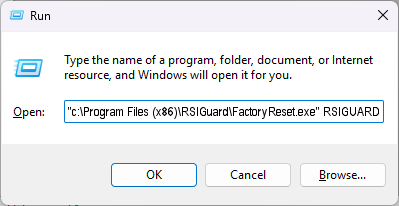 - Click OK and follow the prompts to clear settings
Back to top
Can RSIGuard be set to run for some users and not others?
In Windows, each user has a personalized Start Menu that merges with the system Start Menu. Normally the RSIGuard shortcut is placed in the system "StartUp" folder which applies to all users. Move this shortcut to the "StartUp" folders of users who wish to run RSIGuard and only those users will launch RSIGuard upon logging in.
Back to top
When RSIGuard runs, I can't use the numeric keypad. Why? or Where are my hotkeys?
During the setup wizard, the KeyControl wizard page gave you the option of putting default hotkeys on the numeric keypad. If you chose this option, normal numeric keypad function (i.e. typing numbers) was replaced with RSIGuard hotkeys. To change the hotkeys to be somewhere else on the keyboard (or to remove hotkeys altogether), go to the Setup menu, select Settings, and select the KeyControl tab. Change the hotkeys to your desired location (or remove them if you don't want them).
You can view your hotkey assignments by selecting "Show Hotkey Assignments" in the Setup menu. You may wish to place stickers on the keys you use to remind you where the hotkeys are. Click here for more information on KeyControl hotkeys.
Back to top
What evidence supports the value of RSIGuard features?
A large body of studies have indicated that breaks are appropriate prevention for computer-related RSI's, and our pilot research has shown that people are more likely to take breaks if they occur at appropriate times. Our users consistently state that BreakTimer predicts break-need better than other systems they have tried. People with mouse discomfort who use AutoClick often report that the reduction in discomfort is both immediate and permanent, which makes sense since AutoClick reduces or eliminates the need to click and drag with the mouse -- known causes of RSI. Awareness of risky behaviors has been proven to be beneficial towards injury prevention, and this is the benefit of ForgetMeNots. We have received very positive feedback from Occupational Therapists and Certified Hand Therapists about the information from DataLogger.
As we consolidate research for presentation on our website, we appreciate assistance from researchers and ergonomics scientists. However, in our discussions with foremost researchers on RSI, a frequent comment is that there is very little research that validates any current ergonomic aid. Although this lack of evidence does not imply that current methods don't work, it also gives little guidance about what does. That is a primary motivation for RSIGuard's DataLogger. We believe that by showing how, how long, and how intensely people are working we can not only help researchers find patterns that cause RSI, but we can help learn what behavior changes are most associated with recovery. Although we have initiated research along this line of reasoning, we are always anxious to discuss research possibilities with interested ergonomics scientists.
Click here to view a report that includes research references.
Back to top
Miscellaneous about Repetitive Strain Injuries
What does RSI stand for? Are there other names for RSI?
RSI stands for Repetitive Strain Injury though some people say RSI stands for Repetitive Stress Injury. Another name for RSI is Cumulative Strain Disorder (CTD) or occupational overuse syndrome (OOS). Carpal Tunnel Syndrome (CTS) is often used interchangably with RSI, but CTS is really just one of many types of RSI -- others include tendinitis (often spelled tendonitis), tenosynovitis, deQuervain's syndrome, Thoracic Outlet Syndrome, and many others.
Back to top
Is discomfort and injury from repetition a recent problem?
According to a 1995 paper by Joy Linn: In 1893 "Gray's Anatomy" describes peritendinitis crepitans as occurring in washer women (Barton, 1989). Some old names for CTD from the past include: glass arm, telegraphist's cramp and washer woman's thumb. In the 19th century "traumatic tenosynovitis" and "peritendinitis crepitanis" were acknowledged as pain caused by work activities. Earlier this century morse code operators experienced similar disorders. The recognition of CTD has increased as the numbers of injuries increase worldwide.
Back to top |
|